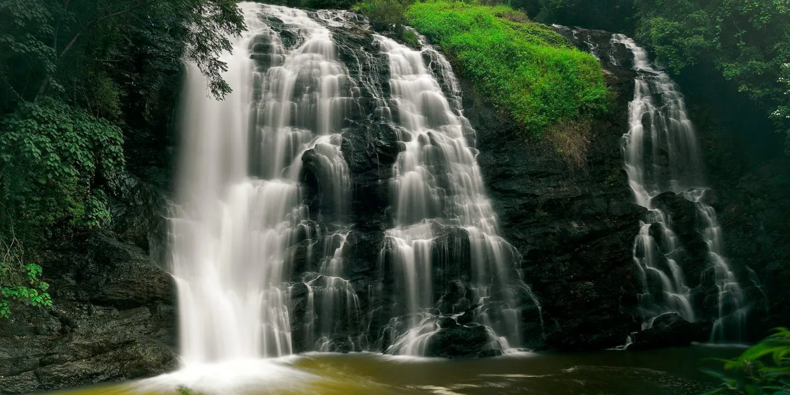
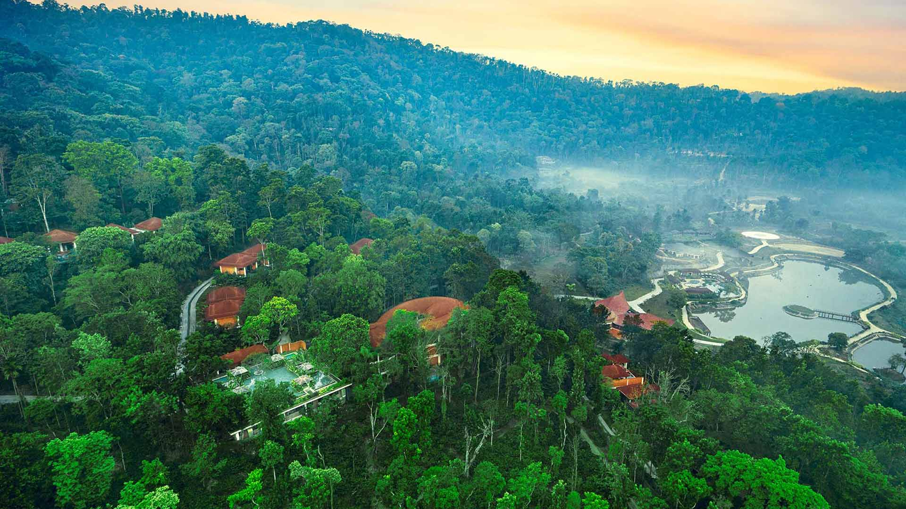

Escape to Coorg — Karnataka's Scotland. A misty paradise of coffee plantations, cascading waterfalls, ancient temples and wild elephants, just 250 km from Bangalore. Our 3-day tour covers every unmissable corner of this stunning hill district.

Coorg, officially known as Kodagu, is Karnataka's most celebrated hill district and one of the most breathtaking destinations in all of South India. Framed by the misty peaks of the Western Ghats, Coorg is a land of endless coffee and cardamom plantations, dense shola forests, roaring waterfalls, ancient temples and warm Kodava hospitality. Its headquarters, Madikeri, is a charming hill town known for the historic Madikeri Fort, the scenic Raja's Seat viewpoint and the elegant domed Omkareshwara Temple.
Located approximately 250 km from Bangalore, Coorg is the perfect 3-day escape from city life. Our Bangalore to Coorg cab service takes care of all your transport needs for the complete 900 km round trip — with your driver picking you up on Day 1 and returning you to Bangalore on Day 3. The tour covers 8 of Coorg's most celebrated attractions across three well-paced days, including the sacred source of the Kaveri at Talakaveri, the holy confluence at Bhagamandala, the magnificent Abbey Falls, the iconic Raja's Seat and the unforgettable Dubare Elephant Camp.
Whether you're planning a romantic couple's getaway, a family holiday or a group trip, Coorg offers something for everyone. From spiritual seekers and wildlife enthusiasts to trekkers and coffee lovers, this destination never disappoints. And with our reliable, comfortable AC cabs and experienced drivers, getting there is as pleasant as being there.
Coorg produces 30% of India's coffee. Rolling plantations carpet every hillside — the air itself smells of coffee and cardamom.
Meet and interact with gentle giants at the famous Dubare Elephant Camp on the banks of the Kaveri River.
A stunning 70-foot waterfall surrounded by lush spice plantations — one of Coorg's most photographed natural wonders.
A legendary sunset viewpoint where Coorg's kings once sat to watch the sun set over misty valleys and paddy fields.
A carefully crafted 3-day itinerary that covers 8 of Coorg's top attractions. Your cab departs Bangalore at 7:00 AM on Day 1 and returns by evening on Day 3 — with hotel arrangements to be made by guests independently.
Your cab picks you up from your home, hotel, airport, railway station or bus stand in Bangalore at 7:00 AM. The drive towards Coorg takes you through the Mysore–Madikeri highway, with scenic countryside giving way to the first misty outlines of the Western Ghats.
Located in Bylakuppe, near Kushalnagar — your first stop on the way to Coorg. The Namdroling Nyingmapa Monastery, popularly called the "Golden Temple," is one of the largest Tibetan Buddhist settlements outside Tibet. The prayer hall houses three breathtaking gilded statues of the Buddha — the centrepiece standing 60 feet tall — surrounded by intricate murals, ornate thrones and thousands of devotees in saffron and maroon robes. An atmosphere of profound peace and beauty that feels worlds away from city life.
A serene island nature camp situated on the Kaveri River, reachable by a rope bridge or bamboo raft. Dense bamboo groves, hanging bridges and a resident herd of deer make this a lovely, peaceful stop. Elephant rides and coracle rides are available on site (at local rates — not included in the cab package). A refreshing green escape before entering Madikeri.
Arrive in Madikeri by early evening. Check in to your hotel or resort (booked independently by guests). Unwind, enjoy the cool mountain air and savour a Coorg meal before resting up for the next day's sightseeing.
High in the Brahmagiri hills at an altitude of 1,276 metres, Talakaveri is the revered source of the Kaveri River — one of India's most sacred rivers. A natural spring surrounded by a tank marks the exact point where the Kaveri emerges from the earth. The hilltop temple, the holy kund (tank) and the panoramic views of the Western Ghats make this a deeply spiritual and visually stunning destination. During Tula Sankramana (October), thousands of pilgrims gather to witness the miraculous appearance of the spring.
Located at the confluence of three rivers — the Kaveri, Kannike and the mythical underground Sujyothi — Bhagamandala is one of Coorg's most sacred pilgrimage sites. The grand Bhagandeshwara Temple complex, built in the traditional Kerala style with sloped roofs and carved wooden columns, dominates the river banks. Pilgrims take a holy dip at the Triveni Sangama (the sacred three-river meeting point) before entering the temple. A site of deep religious significance and serene natural beauty.
One of Coorg's most photographed natural wonders — Abbey Falls is a magnificent 70-foot cascade of water plunging through a verdant gorge surrounded by overhanging coffee plantations, pepper vines and areca nut trees. A hanging bridge offers a thrilling perspective directly over the falls. The cool mist and the lush, vibrant green of the surrounding plantation create an atmosphere of untouched natural splendour. Best visited in the morning before the afternoon crowds arrive.
Perched on a hilltop in Madikeri, Raja's Seat (meaning "Seat of the King") is the most iconic viewpoint in Coorg. The kings of Kodagu once sat here to watch the breathtaking sunset over endless valleys, misty forests and terraced paddy fields. Today it remains the finest place in Coorg to watch the sun go down — the sky transforms into a canvas of orange, gold and deep purple as night settles over the Western Ghats. A small garden, toy train for children and food stalls make this a lovely spot to linger.
A uniquely beautiful temple in the heart of Madikeri, the Omkareshwara Temple was built in 1820 by Lingarajendra Wodeyar II. It is dedicated to Lord Shiva and features a striking architectural fusion of Hindu, Islamic and Gothic styles — with a central dome flanked by four smaller domes, Gothic arches and European pilasters surrounding a serene central water tank. The temple is calm, well-maintained and architecturally unlike anything else in Karnataka.
Located on the banks of the Kaveri River near Kushalnagar, Dubare Elephant Camp is a Wildlife Department–managed forest elephant camp and one of the most special wildlife experiences in Karnataka. Interact with the camp's resident elephants up close — watch them being bathed and fed, and observe the mahouts (elephant keepers) going about their daily routine. Elephant rides and river coracle rides are available on site (at local rates). The camp is set within a thick forest reserve, and the journey there through dense jungle is magical in itself. The best way to end a Coorg trip.
After visiting Dubare Elephant Camp, your cab heads back to Bangalore. The return journey takes approximately 4–5 hours on the Mysore highway. You'll be back in Bangalore comfortably by evening, completing the 900 km round trip.
All prices cover the complete 900 km round trip across 3 days. Night bata (driver night allowance) is included. Toll and parking charges are extra and paid at actuals.
Well-maintained AC vehicles for the full 3-day 900 km trip — arrive at every destination fresh and relaxed.
Police-verified drivers who know the Ghats roads, the best routes and all Coorg attractions inside out.
Vehicle, fuel, driver bata and night charges all included. Only toll and parking charged at actuals.
Our team is available around the clock throughout your 3-day trip via call and WhatsApp.